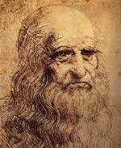
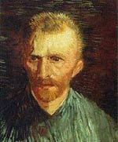
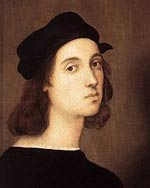
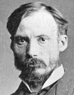

| Name and Year |
Portrait |
Description |
Famous Paintings |
| Leonardo Da Vinci (1452 – 1519) |
 |
Renaissance painter, scientist, inventor, and more. |
Mona Lisa and Last Supper |
| Vincent Van Gogh (1853 – 1890) |
 |
Dutch post-impressionist painter. |
Sunflowers, The Starry night, Cafe Terrace at Night |
| Rembrandt (1606 – 1669) |
|
Dutch Master. One of greatest painters, admired for his vivid realism. |
The Jewish Bride, The Storm of the sea of Galilee |
| Michelangelo (1475 – 1564) |
|
Renaissance sculptor, painter and architect. |
The epic work on the Sistine Chapel |
| Claude Monet (1840 – 1926) |
|
French impressionist painter. |
Waterlilies, Women in Garden, Impression Sunrise |
| Pablo Picasso 1881 – 1973) |
 |
Spanish, modern ‘cubist’ painter. |
Guernica, Bird of Peace |
| Raphael (1483 – 1520) |
 |
Italian painter, with da Vinci and Michalengelo make up the high renaissance trinity. |
Mond Crucifixion, The Wedding of the Virgin |
| August Renoir (1841–1919) |
 |
French painter, one of the early pioneers of impressionism. Also influenced by Italian renaissance. |
Dance at Le Moulin de la Galette, On the Terrace |
| Jan Vermeer (1632 – 1675) |
|
Dutch painter, who specialised in genre painting – vivid depictions of still life. |
View of Delft, Girl With a Pearl Earring, and The Milkmaid |
| Paul Cezanne (1839-1906) |
 |
French post-impressionist painter. |
The Card Players, Still life with a curtain |